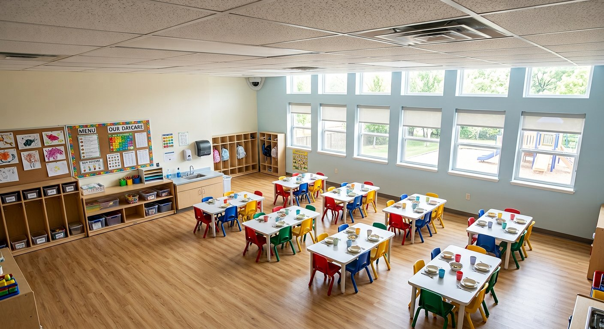
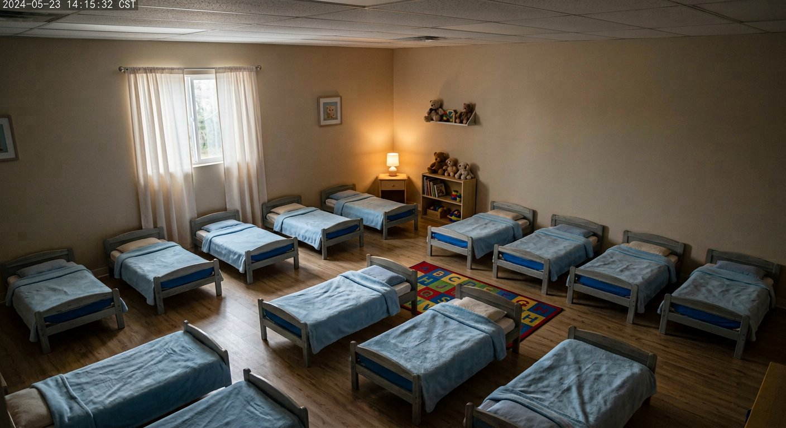

Untuk orang tua dan pengelola daycare
Setiap hari anak Anda, terlihat dan tercatat.
Kamera ruangan, catatan makan dengan foto piring, dan kualitas udara dalam satu laporan harian. Dibuka dari ponsel, tanpa aplikasi tambahan.
Digunakan setiap hari di Ceria Ananda Daycare, Bandung.
 Kamera 1 · Ruang Bermain Utama
Kamera 1 · Ruang Bermain Utama
Untuk siapa
Satu layanan, tiga sudut pandang.
Orang tua melihat, pengasuh mencatat, pengelola memastikan semuanya berjalan.
Orang tua
Untuk ayah, ibu, dan wali
- Kamera ruangan tempat anak berada
- Foto piring sebelum dan sesudah makan
- Suhu tubuh, obat, dan pemberitahuan penting
- Laporan harian yang bisa dicetak

Pengasuh
Untuk staf yang mendampingi anak
- Tandai tiba, catat suhu, tandai pulang
- Pindai piring dengan kamera, nilai gizi terhitung otomatis
- Catatan obat dan serah terima shift
- Kejadian ditandai selesai dari ponsel

Pengelola daycare
Untuk pemilik dan admin
- Ringkasan kehadiran, kejadian, dan udara
- Riwayat siapa membuka kamera dan kapan
- Kelola akun staf, kode anak, dan batas peringatan
- Semua catatan bisa diekspor
Fitur
Bukan sekadar “anak baik-baik saja”.
Setiap informasi punya waktu, satuan, dan siapa yang mencatatnya.
Lihat ruangan anak dari ponsel
Kamera mengikuti ruangan tempat anak Anda berada. Nama anak Anda tampil di layar; wajah anak lain diburamkan.
- Tiga ruangan anak dapat dibuka orang tua; dapur hanya untuk staf
- Setiap tontonan tercatat di riwayat akses daycare

Tahu persis apa yang dimakan
Pengasuh memindai piring dengan kamera saat disajikan dan sesudah makan. Makanan dikenali otomatis, beratnya diperkirakan, dan nilai gizinya dihitung. Anda melihat foto piring, gram per menu, perkiraan kalori, dan riwayat tujuh hari.
- Alergi anak tampil di setiap layar pengasuh
- Nafsu makan yang turun terlihat lebih awal

Udara ruangan yang sehat
Suhu, kelembapan, dan kesegaran udara diukur di setiap ruangan. Bila ruangan perlu ventilasi, pengasuh diberi tahu lebih dulu.
- Batas peringatan diatur pengelola daycare
- Riwayat per ruangan tersedia untuk admin
Pemberitahuan yang penting saja
Anak terjatuh, mendekati dapur, atau menangis cukup lama: pengasuh menangani, Anda menerima ringkasannya — waktu, ruangan, siapa yang menangani, dan kondisi anak.
- Tiga tingkat: Penting, Perhatian, Info
- Lewat WhatsApp, e-mail, atau di aplikasi
Cara kerja
Mulai dalam tiga langkah.
Daycare memasang
Kamera dan sensor udara dipasang di setiap ruangan, staf dilatih dalam satu hari.
Orang tua menerima kode
Daftar dengan e-mail, masukkan kode anak, dan dasbor langsung terbuka.
Setiap hari, satu laporan
Tiba, suhu, makan, tidur, kejadian, pulang — dalam satu garis waktu yang bisa dicetak.
Keamanan & privasi
Anak-anak berhak atas privasi.
Hanya orang yang berhak
Kamera anak Anda hanya bisa dibuka oleh akun yang tertaut dengan kode anak, pengasuh yang bertugas, dan admin daycare.
Wajah anak lain diburamkan
Pada tampilan orang tua, hanya anak Anda yang ditandai dengan nama.
Rekaman tidak disimpan selamanya
Rekaman kamera terhapus otomatis setelah 7 hari. Catatan harian dapat dihapus atas permintaan.
Semua akses tercatat
Siapa membuka kamera, kapan, dan untuk apa — dapat diminta orang tua kepada daycare.
Harga
Per anak aktif, per bulan.
Orang tua tidak dikenakan biaya. Harga sudah termasuk pajak, pemasangan, dan pelatihan staf.
- Laporan harian dan pemberitahuan
- Absensi, suhu tubuh, catatan obat
- Pindai piring & nilai gizi
- Hingga 30 anak, 1 lokasi
- Semua fitur Dasar
- Kamera ruangan langsung untuk orang tua
- Sensor udara di setiap ruangan
- Pemberitahuan kejadian
- Riwayat akses dan ekspor data
- Hingga 80 anak, 1 lokasi
- Semua fitur Utama di setiap lokasi
- Ringkasan lintas cabang
- Integrasi tagihan dan absensi
- Dukungan prioritas
Pertanyaan umum
Yang sering ditanyakan orang tua.
Siapa saja yang bisa melihat kamera anak saya?
Bagaimana cara mendapat akun?
Apakah angka kalori akurat?
Apa yang terjadi saat anak terjatuh?
Apakah butuh aplikasi khusus?
Bisakah saya meminta penghapusan data anak?
Hubungi kami
Minta penawaran untuk daycare Anda.
Ceritakan jumlah anak dan ruangan. Kami membalas dalam satu hari kerja.
- Telepon
- +62 22 2034 5510
- halo@smartdaycare.id
- Jam layanan
- Senin–Sabtu, 08.00–17.00 WIB
- Kantor
- Jl. Cihampelas No. 118, Bandung 40131